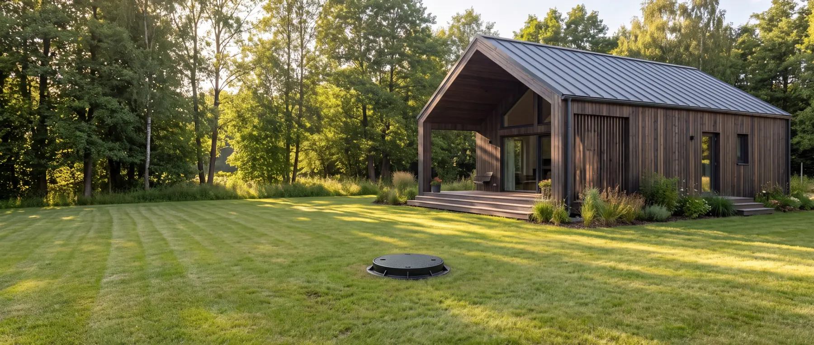

Szezonális használat
A szezonális terhelés nem kevesebb szennyvizet jelent, hanem hosszú szüneteket és hirtelen visszatérő csúcsokat. Ez nemcsak kapacitási kérdés.

Nem egyszerűen kevesebb
Hosszú szünet, hirtelen csúcs
A szezonális terhelés nem azt jelenti, hogy „kevesebb szennyvíz”. Azt jelenti, hogy hosszabb alacsony vagy nulla terhelési időszakok váltakoznak hirtelen visszatérő csúcsokkal — és ez a kettő együtt más feladat, mint a folyamatos, kiegyensúlyozott használat.
Az aktív biológiai rendszer élő baktériumközösséggel dolgozik, amely folyamatos szervesanyag-utánpótlást igényel. Hosszú szünet után ez a közösség lecsökken, és a visszatérő terhelést nem azonnal képes kezelni.
Ezért a szezonális használat nemcsak kapacitási, hanem technológiaválasztási kérdés is: bizonyos használati profiloknál a passzív, oldómedencés rendszer relevánsabb lehet.
A terhelési profil
Mit kell rögzíteni?
Éves átlaglétszámot itt nem érdemes számolni — az elfedi éppen azt, ami számít.
-
Használati hónapok. Mely hónapokban használják egyáltalán az ingatlant.
-
A használat mintája. Minden hétvégén, csak a nyári szezonban, vagy szórványosan.
-
Csúcsszezon hossza és létszáma. Hány hétig és hány fővel.
-
A leghosszabb nulla terhelés. Ez a legfontosabb egyetlen adat ezen az oldalon — ettől függ, milyen üzemmód vagy leállítási eljárás szükséges.
-
A visszatérési csúcs. A szünet után rögtön teljes terhelés érkezik, vagy fokozatosan indul a használat.
-
Áramellátás távollét alatt. Marad-e áram a berendezésen, amikor senki nincs ott.
Két üzemállapot
Rövid és hosszú távollét — nem ugyanaz
Rövidebb szünet — hétvégi ház jellegű használat
- A berendezés üzemben marad
- Alulterheléses üzemmód, ahol a vezérlés ezt támogatja
- A baktériumközösség fennmarad
- A visszatérés nem igényel külön beavatkozást
- Az áramellátásnak folyamatosnak kell lennie
Hosszú, több hónapos kihagyás
- A berendezés leállítása jöhet szóba
- Kiürítés és tiszta vízzel való feltöltés
- Tavasszal újbóli beüzemelés szükséges
- A biológia újraindulása időt vesz igénybe
- Ez tervezett eljárás, nem „csak kikapcsoljuk”
Technológiaválasztás
Amikor a használati mód dönt, nem a méret
Ha a használat erősen szakaszos — például kizárólag nyári nyaraló, hosszú téli kihagyással —, akkor a kérdés már nem az, hogy „hány fős rendszer kell”, hanem hogy melyik technológia bírja jól ezt a mintát.
Az aktív biológiai rendszer folyamatos működésre készül, és a hosszú szünetet külön eljárással kezeli. A passzív, oldómedencés rendszer ebből a szempontból toleránsabb, mert nem élő, aktív iszapközösség folyamatos fenntartásán alapul.
Ez nem azt jelenti, hogy nyaralóba nem való aktív rendszer — hanem azt, hogy a választásnál a használati profilt is meg kell nézni, nem csak a létszámot.
Gyakori kérdések
Amit a leggyakrabban kérdeznek
Télen nem használjuk a nyaralót. Mi lesz a rendszerrel?
Több hónapos kihagyásnál tervezett eljárás szükséges — jellemzően leállítás, kiürítés, tiszta vízzel való feltöltés, majd tavasszal újbóli beüzemelés. A pontos időhatárokat és a lépéseket a berendezés aktuális használati útmutatója rögzíti, ezért ezt mindig a konkrét modellre kell egyeztetni.
Hétvégi házhoz jó az aktív biológiai rendszer?
Rendszeres hétvégi használatnál igen, ha a vezérlés támogatja az alulterheléses üzemmódot és marad áram a berendezésen. Ha a használat ennél szakaszosabb — hosszú, több hónapos szünetekkel —, érdemes a passzív rendszert is megvizsgálni.
Kell áram, amikor nem vagyunk ott?
Az aktív biológiai rendszernél igen: a levegőztetés a baktériumközösség fenntartásához kell, és ez a távollét alatt is fut, csökkentett üzemben. Ha az ingatlanon a téli időszakban nincs áram, azt a technológiaválasztásnál előre jelezni kell.
Mennyi idő, míg a rendszer újraindul tavasszal?
A biológia újraindulása időt vesz igénybe — a kilépő víz minősége nem az első naptól éri el a szokásos szintet. Konkrét időtartamot itt nem közlünk, mert az a modelltől, a hőmérséklettől és a terheléstől függ; ezt a beüzemelés dokumentációja rögzíti.